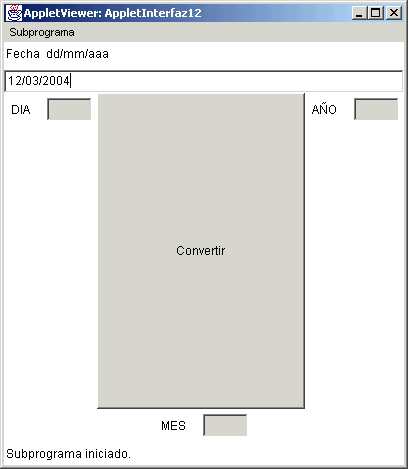
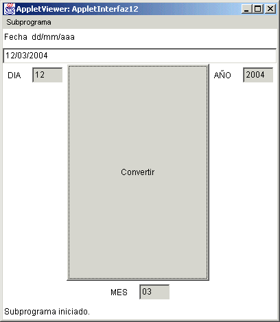
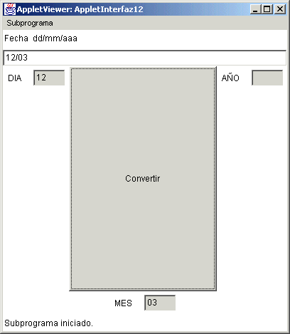
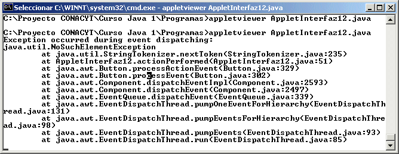
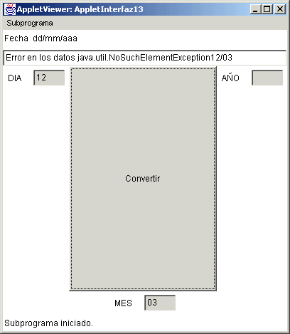
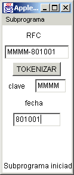
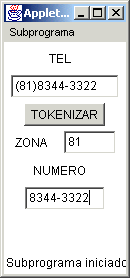

Módulo 7:
Tópicos Avanzados en Java 
3. StringTokenizer
El StringTokenizer es una clase que nos ayuda a poder tomar diferentes "tokens" o datos de un String, los cuales estrán separados por algún delimitador.
Cuando pasamos de algun paquete a otro, como de Excel a Word, o algo así, es común que cuando tenemos mas de un dato por línea, el paquete nos haga separaciones por comas o espacios. Con la clase StringTokenizer podemos tomar los datos de un String y poderlos separar para su procesamiento.
Imagina que por ejemplo tienes un applet en el que le pides al usuario un dato de tipo fecha, separando con slash (/), veamos como puede quedar el ejemplo:
import java.awt.*;
import java.applet.*;
import java.awt.event.*;
import java.util.StringTokenizer;
// <applet width="400" height="400" code="AppletInterfaz12"></applet>
public class AppletInterfaz12 extends Applet implements ActionListener{
Button b1;
TextField t1, t2, t3, t4;
Label l1, l2, l3, l4;
Panel p1, p2, p3, p4;
public AppletInterfaz12() {
setLayout(new BorderLayout());
p1 = new Panel(new GridLayout(2,1,5,5));
p2 = new Panel(new FlowLayout());
p3 = new Panel(new FlowLayout());
p4 = new Panel(new FlowLayout());
l1 = new Label("Fecha dd/mm/aaa");
t1 = new TextField(10);
l2 = new Label("DIA");
t2 = new TextField(3);
l3 = new Label("MES");
t3 = new TextField(3);
l4 = new Label("AÑO");
t4 = new TextField(3);
b1 = new Button("Convertir");
t2.setEditable(false);
t3.setEditable(false);
t4.setEditable(false);
p1.add(l1);
p1.add(t1);
p2.add(l2);
p2.add(t2);
p3.add(l3);
p3.add(t3);
p4.add(l4);
p4.add(t4);
add(p1, BorderLayout.NORTH);
add(p2, BorderLayout.WEST);
add(p4, BorderLayout.EAST);
add(p3, BorderLayout.SOUTH);
add(b1, BorderLayout.CENTER);
b1.addActionListener(this);
}
public void actionPerformed(ActionEvent ae) {
StringTokenizer st = new StringTokenizer(t1.getText(), "/");
t2.setText(st.nextToken());
t3.setText(st.nextToken());
t4.setText(st.nextToken());
}
}
Ahora veamos la ejecución del Applet (antes de dar clic y despues de darlo):


De aqui podemos analizar varias cosas, primero que al crear el objeto de la clase StringTokenizer, debemos definir en el constructor dos cosas, el String del cual vamos a extraer datos y el caracter que usaremos como delimitador, como nos lo dá el usado:
StringTokenizer st = new StringTokenizer(t1.getText(), "/");
De aquí podemos deducir que una vez que el usuario da el dato en el texto, lo tomamos y lo usamos para construir el objeto de la clase StringTokenizer con el delimitador "/".
Luego revisando esta clase observamos que hay una serie de métodos que nos ayudan a tomar los "tokens" o datos del String, como el método que estamos utilizando que es el nextToken(), el cual regresa un valor String.
También existe el método countTokens(), que te dá el número de tokens, el método hasMoreTokens() que te regresa un valor boleano para saber si hay mas datos en el string.
Es decir la forma de tomar los "tokens" es con el método nextToken() el cual te da un String y entonces dentro del objeto StringTokenizer existe un apuntador al siguiente "token" o dato a ser extraido, asi hasta que ya no haya mas tokens a ser extraidos.
¿Pero qué pasa si el StringTokenizer no tiene los suficientes "tokens"?
Veamos la ejecución del mismo applet pero con error en los datos a "tokenizar":

Dando el siguiente error en la ventana de ejecución del DOS:

Esta ejecución nos muestra que si no hay más datos a extraer y hacemos un nextToken() sobre el objeto StringTokenizer, entonces tendremos un error de excepcion java.util.NoSuchElementException. Aqui nos conviene utilizar el try/catch revisado anteriormente en excepciones, para poder validarlo, de la manera siguiente:
import java.awt.*;
import java.applet.*;
import java.awt.event.*;
import java.util.*;
// <applet width="400" height="400" code="AppletInterfaz13"></applet>
public class AppletInterfaz13 extends Applet implements ActionListener{
Button b1;
TextField t1, t2, t3, t4;
Label l1, l2, l3, l4;
Panel p1, p2, p3, p4;
public AppletInterfaz13() {
setLayout(new BorderLayout());
p1 = new Panel(new GridLayout(2,1,5,5));
p2 = new Panel(new FlowLayout());
p3 = new Panel(new FlowLayout());
p4 = new Panel(new FlowLayout());
l1 = new Label("Fecha dd/mm/aaa");
t1 = new TextField(10);
l2 = new Label("DIA");
t2 = new TextField(3);
l3 = new Label("MES");
t3 = new TextField(3);
l4 = new Label("AÑO");
t4 = new TextField(3);
b1 = new Button("Convertir");
t2.setEditable(false);
t3.setEditable(false);
t4.setEditable(false);
p1.add(l1);
p1.add(t1);
p2.add(l2);
p2.add(t2);
p3.add(l3);
p3.add(t3);
p4.add(l4);
p4.add(t4);
add(p1, BorderLayout.NORTH);
add(p2, BorderLayout.WEST);
add(p4, BorderLayout.EAST);
add(p3, BorderLayout.SOUTH);
add(b1, BorderLayout.CENTER);
b1.addActionListener(this);
}
public void actionPerformed(ActionEvent ae) {
try {
StringTokenizer st = new StringTokenizer(t1.getText(), "/");
t2.setText(st.nextToken());
t3.setText(st.nextToken());
t4.setText(st.nextToken());
}
catch (NoSuchElementException nsee) {
t1.setText("Error en los datos " + nsee.toString() + t1.getText());
}
}
}
Asi en la ejecución quedaría el error mostrado en el mismo campo de texto t1, con la instrucción:
t1.setText("Error en los datos " + nsee.toString() +
t1.getText());
Como se muestra en el applet ejecutado (antes y después de dar clic en el botón):

La clase StringTokenizer es muy utilizada cuando tomamos algún archivo de datos, pero este es un tema que pertenece al siguiente curso.

2. Crea un applet que tome un telefono utilizando la zona con parentesis y separe la zona y el número en diferentes campos, como lo muestra la figura:

http://java.sun.com/j2se/1.4.2/docs/api/ consultar StringTokenizer